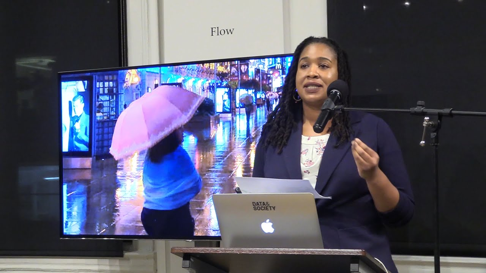
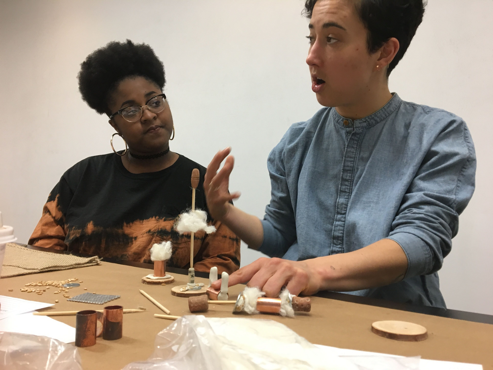
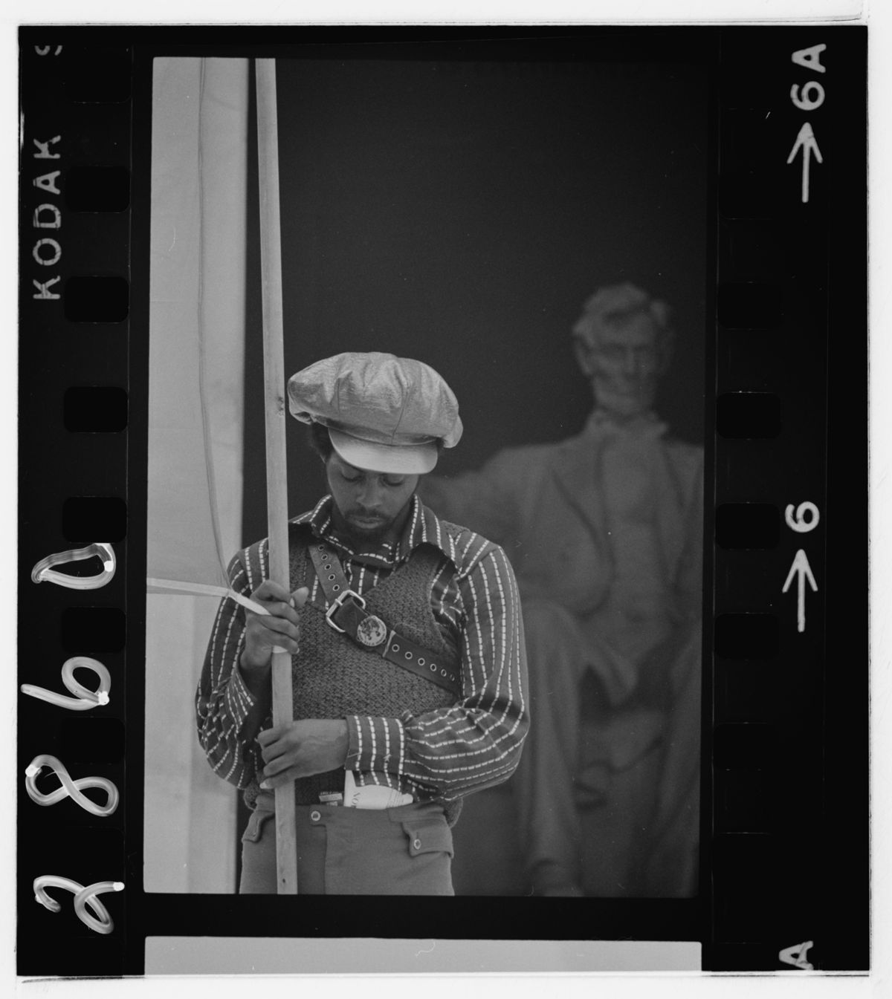

<!DOCTYPE html>
<html lang="en">

</html>

<head>

        <script src="https://cdnjs.cloudflare.com/ajax/libs/p5.js/0.10.2/p5.js"></script>
        <script src="https://cdnjs.cloudflare.com/ajax/libs/p5.js/0.7.1/addons/p5.dom.min.js"></script>

        <meta charset="utf-8" />
        <meta http-equiv="x-ua-compatible" content="ie=edge" />
        <meta name="viewport" content="width=device-width, initial-scale=1" />

        <title> AI.Assembly </title>

        <style>
                body {
                        background: black;
                        color: white;
                }

                a.nav:hover {
                        color: saddlebrown;
                }
        </style>

        <link rel="stylesheet" type="text/css" href="index.css">
</head>

<body>
        <script src="headshots.js"></script>

        <div class="header">
                <h1 class="header-top logo">
                        <a href="#" onclick="remove()"> AI.Assembly </a>
                </h1>

                <nav class="header-top">
                        <ul class="nav">
                                <li> <a href="about.html" class="nav">About</a> </li>
                                <li> <a href="workshops.html" class="nav">Workshops</a> </li> <br>
                                <li> <a href="participants.html" class="nav">Participants</a> </li>
                                <li> <a href="mailto:hello@dinkins.studio?subject=Please add me to the AI.Assembly mailing list!&body=Thank you!"
                                                class="nav">Newsletter</a> </li>
                        </ul>
                </nav>
        </div>

        <br>

        <div id="assembly">

                <div id="assembly-headshots"> </div>

                <div class="work-table labels">
                        <!-- <h2 class="table-item small"> Date </h2> -->
                        <h2 class="table-item small"> Participant(s) </h2>
                        <h2 class="table-item med"> Expertise </h2>
                        <h2 class="table-item big"> Title of work </h2>
                </div>

                <div class="work-table">

                        <!-- row -->
                        <!-- <p class="table-item small"> 2020 </p> -->
                        <p class="table-item small"> Jasmine McNealy </p>
                        <p class="table-item med"> Policy, data, privacy, surveillance </p>
                        <p class="table-item big hide-n-seek">
                                <a href="https://datasociety.net/library/an-ecological-approach-to-data-governance/"
                                        target="_blank" class="link"> An
                                        Ecological Approach to Data Governance
                                        <span>
                                                
                                        </span>
                                </a>
                        </p>

                        <!-- row -->
                        <!-- <p class="table-item small"> 2020 </p> -->
                        <p class="table-item small"> Ashley Jane Lewis </p>
                        <p class="table-item med"> Pedagogy </p>
                        <p class="table-item big hide-n-seek">
                                <a href="https://medium.com/@moreandmoreunlimited/investing-in-futures-beyond-policing-7b1f44f846f3"
                                        target="_blank" class="link"> Investing in Futures: Beyond Policing
                                        <span>
                                                
                                        </span>
                                </a>
                        </p>

                        <!-- row -->
                        <!-- <p class="table-item small"> 2020 </p> -->
                        <p class="table-item small"> Ingrid LaFleur </p>
                        <p class="table-item med"> Afrofuturism </p>
                        <p class="table-item big"> <a
                                        href="https://www.youtube.com/channel/UC1J5hQbvRvm_Dfub4XIq7rw/videos"
                                        target="_blank" class="link"> What does the afrofuture say? </a> </p>

                        <!-- row -->
                        <!-- <p class="table-item small"> 2020 </p> -->
                        <p class="table-item small"> Stephanie Dinkins </p>
                        <p class="table-item med"> Afro-now-ism, documentary practices, emergent media </p>
                        <p class="table-item big hide-n-seek">
                                <a href="https://pioneerworks.org/broadcast/stephanie-dinkins-towards-an-equitable-ecosystem-of-ai/"
                                        target="_blank" class="link hide-n-seek">Towards an Equitable Ecosystem of
                                        Artificial
                                        Intelligence
                                        <span>
                                                
                                        </span>
                                </a>
                        </p>

                        <!-- row -->
                        <!-- <p class="table-item small"> 2020 </p> -->
                        <p class="table-item small"> Ari Melenciano </p>
                        <p class="table-item med"> Digital advocacy </p>
                        <p class="table-item big hide-n-seek">
                                <a href="https://medium.com/@Ariciano/radical-technoculture-for-racial-equity-4831ba268bf2"
                                        target="_blank" class="link"> Radical Technoculture for Racial Equity

                                        <span>
                                                
                                        </span>

                                </a> </p>

                        <!-- row -->
                        <!-- <p class="table-item small"> 2020 </p> -->
                        <p class="table-item small"> Romi Ron Morrison </p>
                        <p class="table-item med"> Black feminist futurity </p>
                        <p class="table-item big"> <a
                                        href="https://benjamins.com/catalog/idj.25.1.05mor/fulltext/idj.25.1.05mor.pdf"
                                        target="_blank" class="link"> Gaps between the digits: On the fleshy unknowns of
                                        the
                                        HUMAN </a> </p>

                        <!-- row -->
                        <!-- <p class="table-item small"> 2020 </p> -->
                        <p class="table-item small"> Sareeta Amrute </p>
                        <p class="table-item med"> Technological capital </p>
                        <p class="table-item big"> <a
                                        href="https://podcasts.apple.com/us/podcast/episode-29-on-surveillance-with-professor-sareeta-amrute/id1072379579?i=1000474244914"
                                        target="_blank" class="link"> On Surveillance </a> </p>

                        <!-- row -->
                        <!-- <p class="table-item small"> 2019 </p> -->
                        <p class="table-item small"> Neta Bomani, Jazsalyn McNeil </p>
                        <p class="table-item med"> Art, critical race & code studies </p>
                        <p class="table-item big"> <a href="https://blackbeyond.xyz/" target="_blank" class="link"> The
                                        Black
                                        Beyond </a> </p>
                        <!-- row -->


                        <!-- <p class="table-item small"> 2020 </p> -->
                        <p class="table-item small"> Josie Williams </p>
                        <p class="table-item med"> Algorithmic equity </p>
                        <p class="table-item big"> <a href="https://www.algorithmicequity.com/data-visualization"
                                        target="_blank" class="link"> NYPD Precinct Database </a> </p>
                        <!-- row -->

                        <!-- <p class="table-item small"> 2019 </p> -->
                        <p class="table-item small"> Woodrow Winchester III </p>
                        <p class="table-item med"> Afrofuturism, Engineering </p>
                        <p class="table-item big"> <a
                                        href="https://jfsdigital.org/wp-content/uploads/2019/12/06-Winchester-Engaging-The-Black.pdf"
                                        target="_blank" class="link"> Engaging the Black Ethos: Afrofuturism as a Design
                                        Lens
                                        for Inclusive Technological Innovation </a> </p>
                        <!-- row -->

                        <!-- <p class="table-item small"> 2019 </p> -->
                        <p class="table-item small"> Nettrice Gaskins </p>
                        <p class="table-item med"> Techno-vernacular </p>
                        <p class="table-item big hide-n-seek">
                                <a href="https://forgeorganizing.org/article/rise-fall-racial-capitalism"
                                        target="_blank" class="link"> The Rise & Fall of Racial Capitalism
                                        <span>
                                                
                                        </span>
                                </a> </p>

                        <!-- <p class="table-item small"> 2019 </p> -->
                        <p class="table-item small"> Kadija Ferryman</p>
                        <p class="table-item med"> Ethics </p>
                        <p class="table-item big hide-n-seek">
                                <a href="https://datasociety.net/library/fairness-in-precision-medicine/"
                                        target="_blank" class="link"> Fairness in Precision Medicine
                                        <span>
                                                
                                        </span>
                                </a> </p>

                        <!-- <p class="table-item small"> 2019 </p> -->
                        <p class="table-item small"> Loretta Cheeks </p>
                        <p class="table-item med"> AI, ML, bias intensity, complex systems </p>
                        <p class="table-item big hide-n-seek">
                                <a href="https://www.astesj.com/publications/ASTESJ_0203209.pdf" target="_blank"
                                        class="link">
                                        Modeling Double Subjectivity for Gaining Programmable Insights: Framing the Case
                                        of Uber
                                </a> </p>

                        <!-- <p class="table-item small"> 2019 </p> -->
                        <p class="table-item small"> Shaka McGlotten </p>
                        <p class="table-item med"> Art, networked intimacies </p>
                        <p class="table-item big hide-n-seek">
                                <a href="https://datasociety.net/announcements/2020/06/11/introducing-the-2020-21-data-society-faculty-fellows/"
                                        target="_blank" class="link">
                                        Black Data
                                </a> </p>

                        <!-- <p class="table-item small"> 2019 </p> -->
                        <p class="table-item small"> Amelia Winger-Bearskin </p>
                        <p class="table-item med"> Art, performance, coding, XR, AI </p>
                        <p class="table-item big hide-n-seek">
                                <a href="http://wampum.codes"
                                        target="_blank" class="link">
                                        Wampum.codes Indigenous Technologist Podcast 
                                </a> </p>


                </div>
        </div>

        <footer class="bottom gradient">
                <h2 class="question"> What does AI need from us? </h2>
                <h2 class="bottom-logo"> <a href="/"> AI.Assembly </a> </h2>
        </footer>

</body>